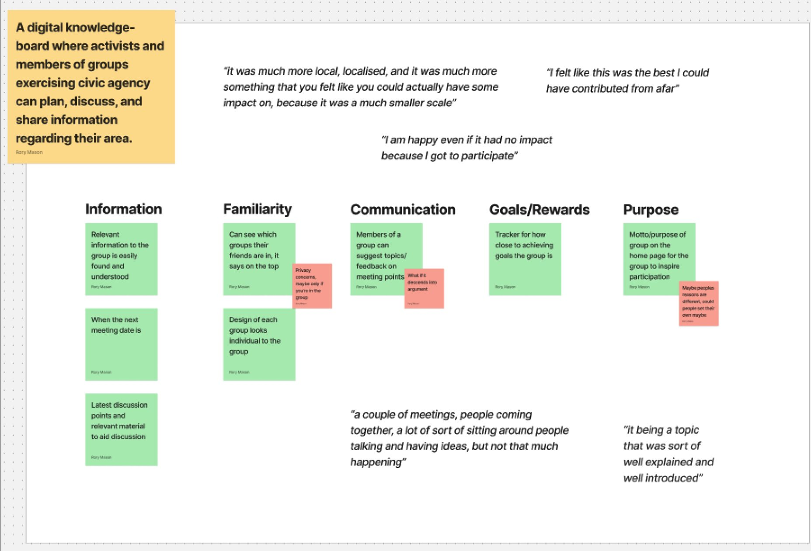
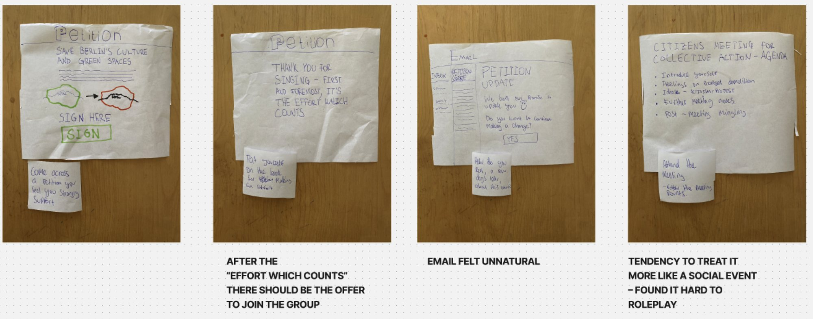
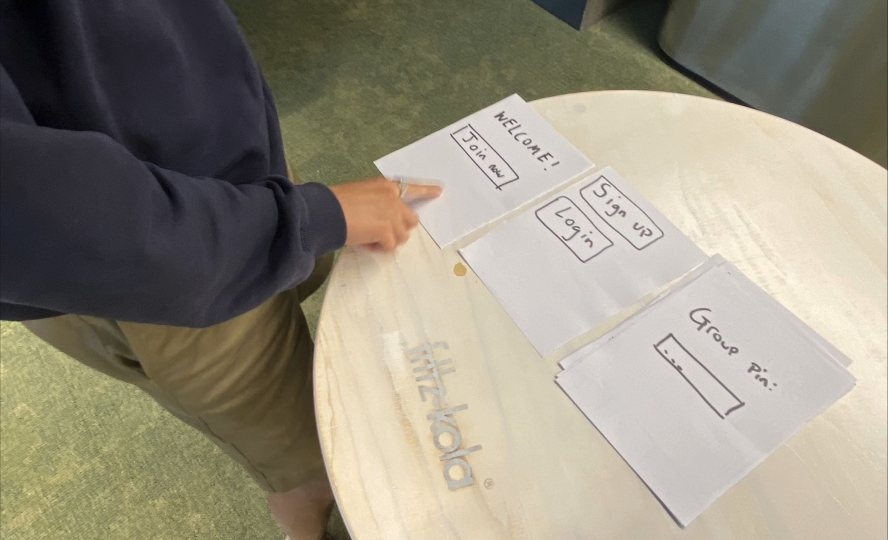
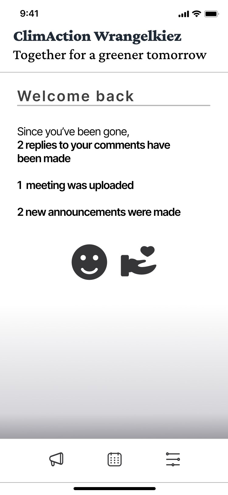
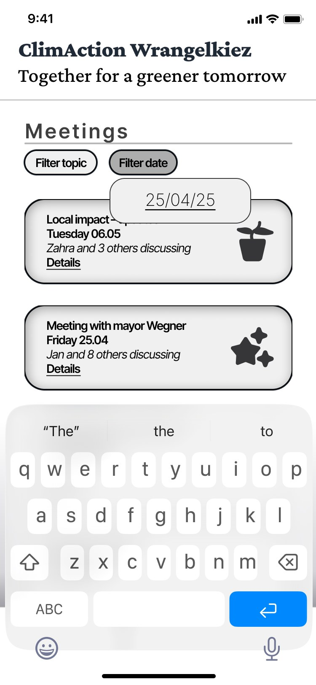
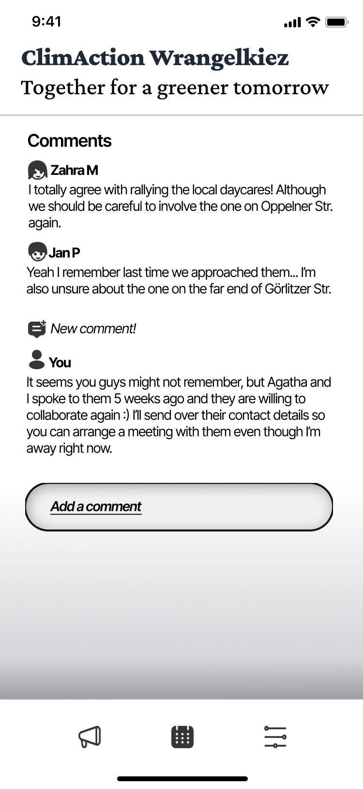
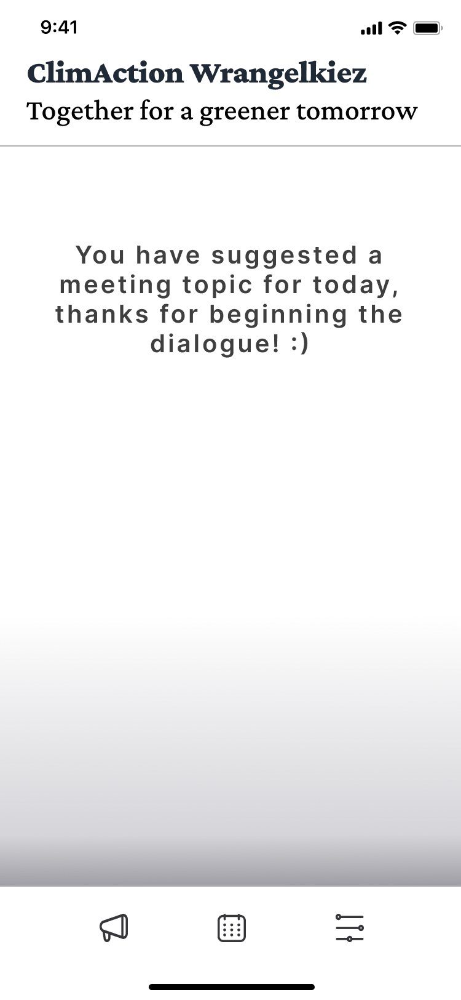

People felt most able to make a difference in small, local groups. But the group chats and channels those groups relied on felt messy, confusing — sometimes alienating — and newcomers struggled to keep up or feel part of things.
A prototype group space that carries the warmth of meeting in person into an app: a friendly summary of what’s changed, meetings that are easy to find, members you can put a name and face to, and clear thanks when you contribute.
I interviewed people active in DIY art collectives, neighbourhood groups, student activism and community archives, asking about moments they felt positive about taking part. I transcribed and tagged each interview, then clustered the findings into themes.
“It was much more local… something that you felt like you could actually have some impact on.”
“I am happy even if it had no impact, because I got to participate.”
Members preferred talking in person, where tone is easy to read. The chats they used instead felt confusing — and better tools weren’t known.

Prototype 1 assumed people struggle to find groups to join. Testing it showed the harder part comes after joining — feeling welcome and keeping up. So I went back for a second round of interviews focused on community and communication, and rebuilt the concept around them.


Communication and clarity · Familiarity · Positive associations · How an experience begins. Feedback on prototype 2 shaped the final, high‑fidelity version.




Constant positivity felt unrealistic. The friendly tone worked, but it should flex with the content of each message.
Meetings belong in the main menu. Upcoming meetings were still too hard to find, and the welcome summary should link straight to them.
Give each group a stronger identity. Its own colours and symbol would build more of a sense of place.